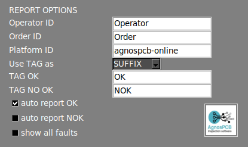
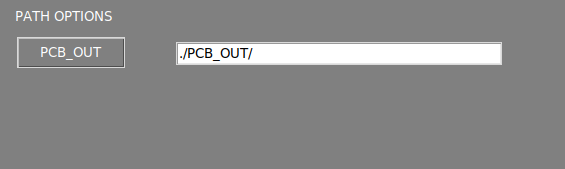
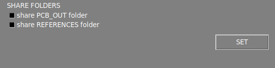
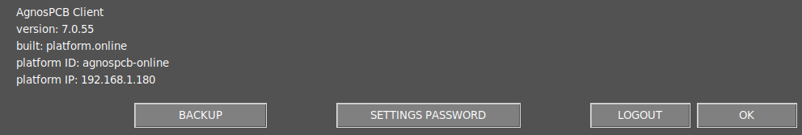

Settings menu
The settings menu is divided into several sections, which are described below.

Interface options

Show exif
Displays the metadata of the current image in the main workspace area.
Show workspace icons
Enable a set of features in the main main workspace area. Learn more about these features in the next section.
Auto signaling
By default, the software will numerate the errors after the inspection. Disabling this option, only the affected area will be highlighted in color.
Mask color
This option allows you to change the color of the marked error. When the color of the marked error matches the color of the PCBA, it's advisable to change it to a higher contrast color to make the marked areas more visible.
Language
Change the interface language. The current available laguanges are: English, French, German, Italian and Spanish.
Workflow options

Auto process
Toggles the auto process function.
Use barcode
Toggles the barcode reading function
Auto process PCB_IN folder
Enabling this, all the UUI images contained in the APP/PCB_IN folder will be automatically process using the loaded REFERENCE in the application. This function is only available on the ONLINE version.
Warning
Since version 7 this feature is no longer operative.
Show errors popup
By disabling this option, the reporting window will no longer popup when reporting an error with UP or DOWN arrow. The reported errors will be generated with the "other" label in the final PDF report.
Show references mosaic
By disabling this option, the mosaic menu won't popup after taking a REFERENCE image.
Operator mode
Enabling this option will hide several features from the interface, simplifying the software's use. It also prevents the operator can change the REFERENCE image or the sensivity of the inspections. A password can be added so that only the administrator can disable this option.
Sensitivity enabled
It allows you to change sensivity when in operator mode.
Report options

Operator ID
Set an ID for the current operator. This ID will be displayed in the final PDF report after the inspection is complete.
Order ID
Set an ID for the current manufacturing order. This ID will be displayed in the final PDF report after the inspection is complete.
Platform ID
Set an ID for the AOI.
TAG
Set the TAG (OK or NOK) of the final PDF report as a suffix or a prefix to the file name.
TAG OK
Set a custom OK TAG for the final PDF report.
TAG NO OK
Set a custom NO OK TAG for the final PDF report.
Auto report
When this option is enabled, a final PDF report labeled OK will be automatically generated if no errors are detected after the inspection. The final PDF report can also be generated if any errors are detected during the inspection.
Note
When generating a PDF report automatically, all errors detected will be marked with the "unknown" label.
Show all faults
Displays all detected errors in the PDF report even if the operator has not reported them.
Logo
Set a logo for the PDF report.
Date/time options

Time zone
Set the time zone.
Date and time
Set day and time.
Note
To apply the changes press the SET button and reboot the system.
Path option

PCB OUT
Change the path where the inspections are generated.
Share options

Share folders
By enabling these options, the system will automatically share the PCB_OUT and REFERENCE folders in your local network. The access address will be displayed once the option is set.
Note
To apply the changes press the SET button.
Note
For the OFFLINE units, if you need to change the network interface of your unit, please refer to the network configuration article.
Info section

AOI info
The AOI information is displayed in this section.
Backup
This function generates a backup compressed file of the PCB_OUT folder automatically. The backup file is stored in the APP/BACKUP folder.
Settings password
Set a password to access the settings menu.
Note
Set the password to blank to disable the password requirement.